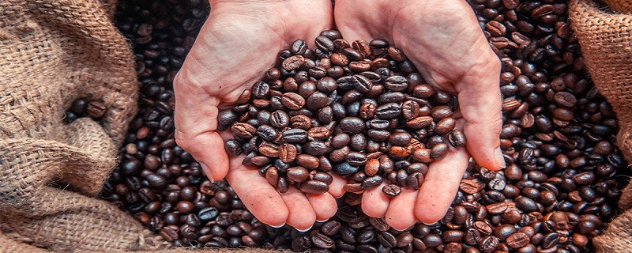
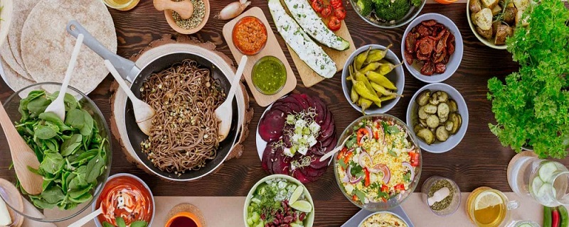
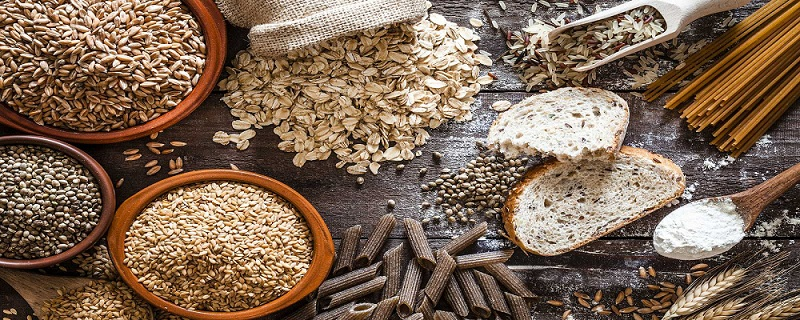

Café Tostado artesanal
Café de especialidad tostado por nuestros expertos, disfrutalos en bebidas calientes o frías; disponibles también en grano o molido en el momento.

Vegans Welcome
Incorporamos a nuestra carta opciones para veganos y vegetarianos...

Menú Celíacxs
Estamos armando un menú gluten-free, dejanos tus sugerencias, recomendaciones o tips. Gracias!!